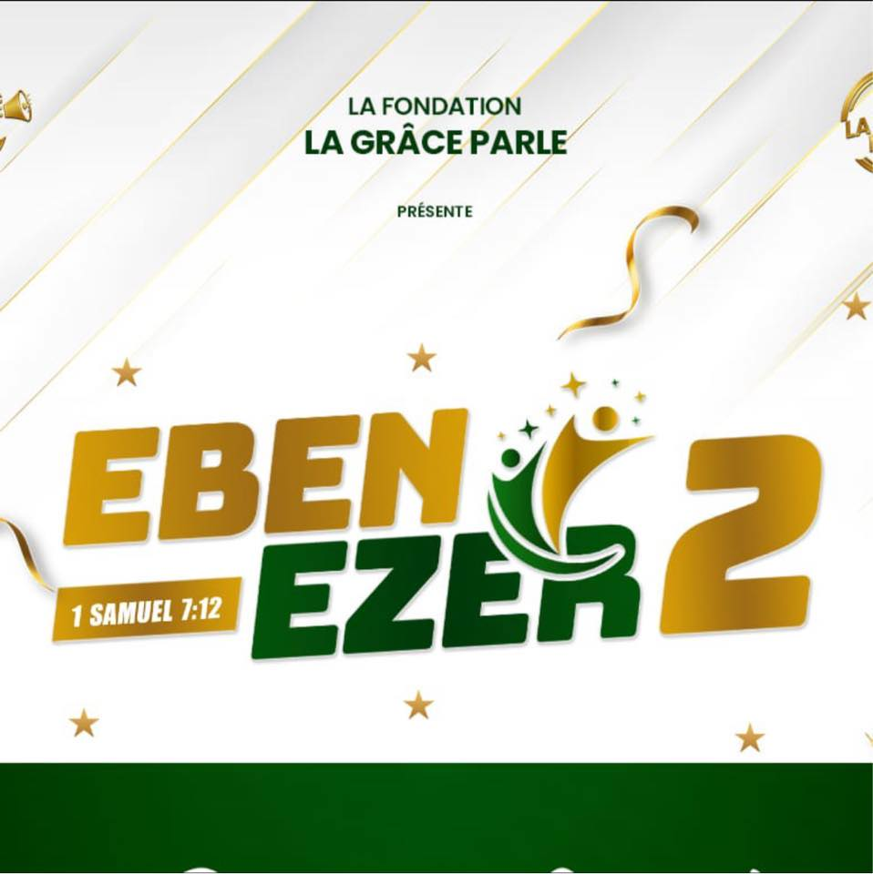

Ebenezer 2 - Une Expérience de Foi et de Louange
L'événement chrétien tant attendu, Ebenezer 2, est sur le point d'illuminer les cœurs et les âmes de milliers de croyants. Prévu pour le 10 Septembre 2023. Organisé par le Centre de Prière "La Grâce Parle", cet événement promet une expérience inoubliable de foi, de prière, de louange et d'enseignement biblique. Après le succès retentissant de la première édition, l'équipe derrière l'événement revient avec encore plus de ferveur et de dévouement pour offrir un programme enrichissant et édifiant.
Renouvellement de la Foi : Un Moment de Prière Puissant
Le cœur d'Ebenezer 2 réside dans la puissance de la prière. L'événement sera dédié à un moment de prière intense et profonde. Les participants auront l'opportunité de se rassembler dans l'unité pour élever leurs voix et leurs cœurs vers le Très-Haut. Que ce soit pour des besoins personnels, des défis mondiaux ou simplement pour louer Dieu, ce moment de prière renouvellera la foi de chacun et renforcera les liens de la communauté.
Adoration Céleste : Élever les Âmes par la Musique
La louange et l'adoration occuperont une place centrale à Ebenezer 2. Une équipe de musiciens talentueux guidera les participants dans un voyage céleste à travers la musique et les chants de louange. Les moments d'adoration offriront une occasion unique de se connecter avec Dieu d'une manière profonde et personnelle. Les mélodies enveloppantes et les paroles inspirantes élèveront les âmes et créeront un espace propice à la rencontre divine.
Enseignement Biblique : Nourrir l'Esprit et l'Intellect
L'enseignement biblique sera au cœur d'Ebenezer 2, avec des sessions animées par des enseignants et des pasteurs respectés. Ces moments d'enseignement plongeront les participants dans les Écritures saintes, apportant compréhension et illumination aux vérités bibliques. Des sujets tels que la foi, la grâce, l'amour et l'espoir seront abordés, offrant des perspectives nouvelles et profondes sur la vie chrétienne.
Surprises Divines : Une Touche de Magie Spirituelle
Ebenezer 2 réserve également son lot de surprises divines. Les organisateurs gardent secrètes les détails, mais il est promis que ces moments inattendus apporteront joie, émerveillement et une touche de magie spirituelle à l'événement. Que ce soit à travers des témoignages inspirants, des moments de partage en petits groupes ou des actes de bienveillance, les surprises divines seront une partie intégrante de l'expérience Ebenezer 2.
En somme, Ebenezer 2 s'annonce comme un événement chrétien exceptionnel, rempli de moments de prière puissants, d'adoration inspirante, d'enseignement biblique édifiant et de surprises divines. Organisé par le Centre de Prière "La Grâce Parle", cet événement promet de renouveler la foi de chacun, de nourrir les âmes et d'établir des liens durables au sein de la communauté chrétienne. Que vous soyez à la recherche d'une connexion plus profonde avec Dieu, d'une compréhension approfondie de la Bible ou simplement d'une expérience spirituelle enrichissante, Ebenezer 2 offre tout cela et bien plus encore. Préparez-vous à vivre une expérience transformante et à repartir avec un cœur comblé et une foi renouvelée.